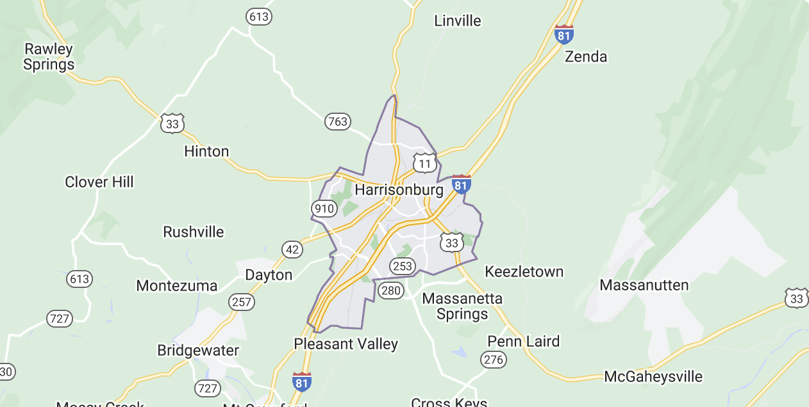

Welcome to Harrisonburg, Virginia!
Explore all things Harrisonburg
Take a look!A Glance of Harrisonburg
Harrisonburg is located in the Shenandoah Valley, and is home to the James Madison Univeristy Dukes. This historic city was founded in 1779 by Thomas Harrison, and since then has become very established and worth visiting. Keep scrolling to view activities, restaurants, and shops in the city.
Things to Do
Shenandoah National Park
- Explore the beauty of the Blue Ridge mountains and visit the Shendoah National Park just minutes away for Harrisonburg!
Cross Keys Vineyard
- Take in beautiful views and try a variety of locally made wines at Cross Keys Vineyard.
Edith J. Carrier Arboretum
- Stroll through Edith J. Carrier Arboretum located right on James Madison Universities campus.
Beards and Broads Axecade
- Visit Beards and Broads for ultimate fun relieving some stress axe throwing!
Restaurants in Harrisonburg
Dining is not limited in Harrisonburg, choose from a wide variety of cuisines to enjoy a meal!

Beyond Restaurant
- 50 W Water Street, Harrisonburg Va
Vito's Italian Kitchen
- 1047 Port Republic Road, Harrisonburg Va
Taj of India
- 34 South Main Street, Harrisonburg Va
Capital Ale House
- 41 A Court Square, Harrisonburg Va
22801
Local Shops and Boutiques
Support small businesses and step inside Harrisonburg's unique stores!
Bluetique
- 187 North Main Street,Harrisonburg Va
Lela's Boutique
- 1925 East Market Street,Harrisonburg Va
The Yellow Button
- 122 South Main Street,Harrisonburg Va
Blue Ridge Floral and Gift Shop
- 165 North Main Street,Harrisonburg Va